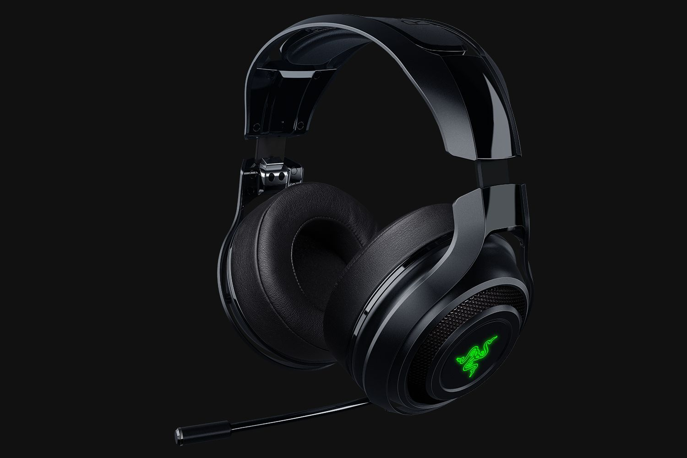
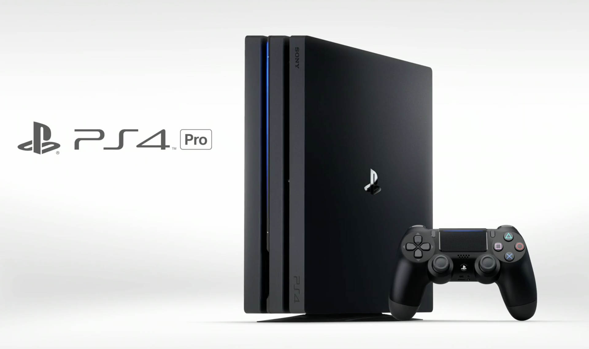

PS4

Uncharted 4 A Thief's End (PS4 Exclusive)
Uncharted 4: A Thief's End is an action-adventure game developed by Naughty Dog and published by Sony Computer Entertainment for PlayStation 4 in May 2016. Following Uncharted 3: Drake's Deception, it is the final Uncharted game to feature protagonist Nathan Drake (portrayed by Nolan North). Drake, retired from fortune hunting with his wife Elena, reunites with his estranged older brother Sam and longtime partner Sully to search for Captain Henry Avery's lost treasure.

Dark Souls 3
Dark Souls III is an action role-playing video game developed by FromSoftware and published by Bandai Namco Entertainment for PlayStation 4, Xbox One, and Microsoft Windows. The fourth entry in the Souls series, Dark Souls III was released in Japan in March 2016, and worldwide in April 2016.

Razer ManO'War Wireless 7.1 Surround Sound Gaming Headset
The Man O’War is Razer’s only wireless gaming headset, producing virtual 7.1 surround sound with a rated battery life of 14 to 20 hours.
It houses large 50mm drivers in a stylish, comfortable design, and provides PS4 and PC players with a long-lasting headset that’s tuned for gaming.
It might be pricey, but it’s a quality piece of hardware that ticks most of the importand headset boxes.

Sony PS4 PRO CONSOLE: 4K RESOLUTION
Essentially, the PS4 Pro is an upgrade of the PS4, rather than a 'next-gen' console. The keywords to take in from the PS4 Pro are 4K and HDR. The new machine will allow game developers to include 4K options in their games, so expect the like of Uncharted 4, Call of Duty: Infinite Warfare, Days Gone, Horizon: Zero Dawn and more to look even better on a 4K TV.
HDR, or High Dynamic Range is the other buzzword to be excited about as the PS4 Pro will allow for extra detail to be seen on a range of games and also a wider range of colors not usually displayed by traditional HD TVs.